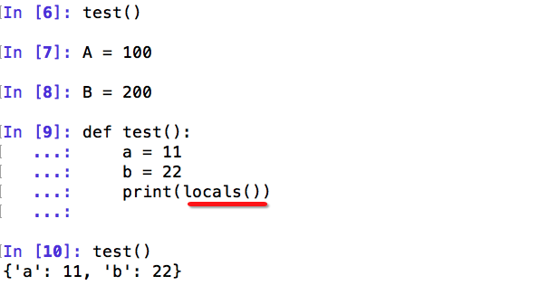
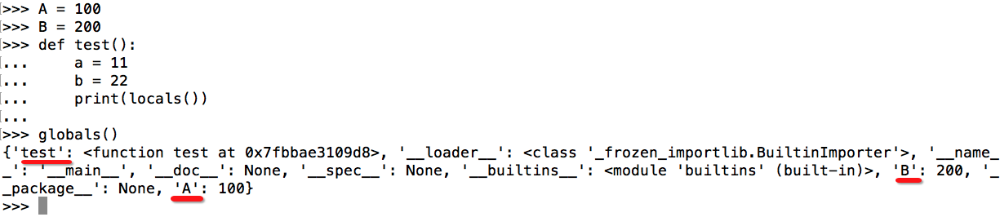

作用域
什么是命名空间
比如有一个学校，有10个班级，在7班和8班中都有一个叫“小王”的同学，如果在学校的广播中呼叫“小王”时，7班和8班中的这2个人就纳闷了，你是喊谁呢！！！如果是“7班的小王”的话，那么就很明确了，那么此时的7班就是小王所在的范围，即命名空间
globals、locals
在之前学习变量的作用域时，经常会提到局部变量和全局变量，之所有称之为局部、全局，就是因为他们的自作用的区域不同，这就是作用域
locals

globals

LEGB 规则
Python 使用 LEGB 的顺序来查找一个符号对应的对象
locals -> enclosing function -> globals -> builtins
- locals，当前所在命名空间（如函数、模块），函数的参数也属于命名空间内的变量
- enclosing，外部嵌套函数的命名空间（闭包中常见）
def fun1(): a = 10 def fun2(): # a 位于外部嵌套函数的命名空间 print(a) - globals，全局变量，函数定义所在模块的命名空间
a = 1 def fun(): # 需要通过 global 指令来声明全局变量 global a # 修改全局变量，而不是创建一个新的 local 变量 a = 2 builtins，内建模块的命名空间。
Python 在启动的时候会自动为我们载入很多内建的函数、类， 比如 dict，list，type，print，这些都位于 __builtin__ 模块中， 可以使用 dir(__builtin__) 来查看。 这也是为什么我们在没有 import任何模块的情况下， 就能使用这么多丰富的函数和功能了。 在Python中，有一个内建模块，该模块中有一些常用函数;在Python启动后， 且没有执行程序员所写的任何代码前，Python会首先加载该内建函数到内存。 另外，该内建模块中的功能可以直接使用，不用在其前添加内建模块前缀， 其原因是对函数、变量、类等标识符的查找是按LEGB法则，其中B即代表内建模块 比如：内建模块中有一个abs()函数，其功能求绝对值，如abs(-20)将返回20。